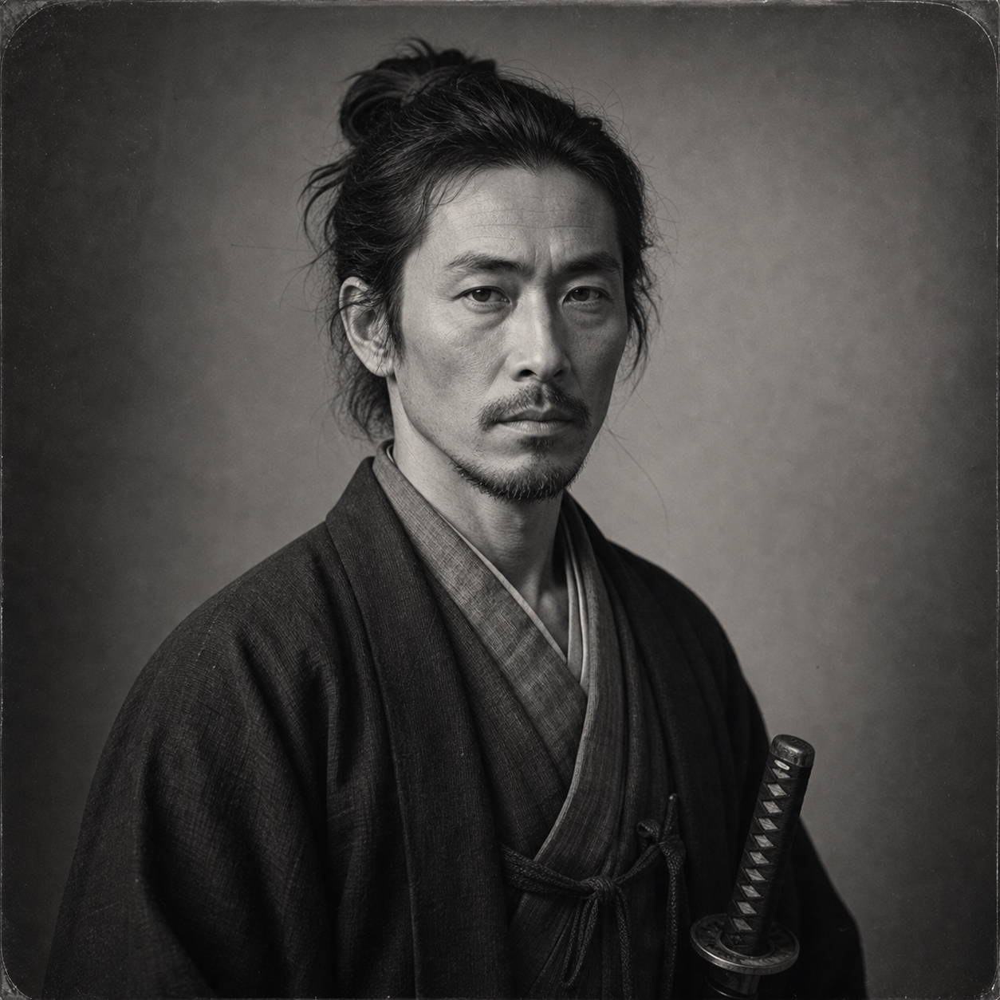

Sakuma Jiro
(375 Points)
Male; Age 39; 5'10", 168 lbs; A weathered Japanese man in his late thirties, spare and self-contained, with the bearing of someone trained all his life to move correctly even when exhausted. His clothes are plain, his courtesy exact, and his sword seems less like ornament than an obligation he is still carrying.
| ST: 11/12 [10] | IQ: 14 [45] | Speed: 6.75 |
| DX: 15 [60] | HT: 12/11 [20] | Move: 6 |
| Dodge: 7 | Parry: 13 |
Advantages
Alertness +3 [15]; Blessed 1 [10] (Reaction: +1 Deity's Followers); Combat Reflexes [15] (Fright Check: 19); Fit [5] (HT: +1; Fatigue Loss: Normal; Fatigue Recovery: Double Rate); Medium [10]; Patron (Followers of the Right Hand) (15 or less) [60] (Equipment: Standard, +5; Special Qualities (Access to Magic in Non-magical World): Very Unusual, +10; Secret: -5; Subtraction (Minimal Intervention): -5); Status 1 [5]; Strong Will +3 [12] (Will: 17).
Disadvantages
Code of Honor (Former Samurai) [-10]; Duty (Followers of the Right Hand) (15 or less) [-25] (Involuntary: -5; Subtraction (Extremely Hazardous): -5); Secret (Spirit-sensitive former retainer carrying rites and obligations outsiders will not understand) [-20]; Sense of Duty (Innocents and the improperly dead) [-10]; Vow (Do not leave shrine, dead, or boundary offense wholly unanswered when duty is clear) [-5].
Quirks
Notices neglected shrines before he notices comfortable inns.; Prefers to repair a boundary before he sleeps near it.; Speaks of the dead as though they are still owed courtesy.; Still kneels correctly even when alone.; Straightens shrine offerings and boundary markers without thinking.. [-5]Skills
Area Knowledge (Northern Honshu and Shrine Roads)-16 [4]; Detect Lies-13 [2]; Diplomacy-13 [2]; Exorcism-16 [8]; First Aid/TL5-14 [1]; Hidden Lore (Shinto Spirits)-17 [8]; History-13 [2]; Katana-19 [24] (Parry: 13); Knife-15 [1] (Parry: 7); Meditation-14 [8]; Savoir-Faire-16 [3]; Stealth-16 [4]; Survival (Mountains)-15 [4]; Theology-14 [4]; Writing-14 [2].
Spells
Affect Spirits-21 [18]; See Invisible-17 [10]; Sense Emotion-18 [12]; Sense Spirit-24 [24]; Summon Spirit-17 [10]; Truthsayer-18 [12]; Turn Spirit-22 [20].
Equipment
Katana (cut 1d+3, imp 1d, cr 1d+3, Skill: 19, Parry: 13; 5 lbs.; $650; Reach: 1,2;1;1,2; ST: 11; Usu. of Fine quality. Quadruple cost at TL6- outside Japan.; Used 2-handed.).Description
Sakuma Jiro comes out of a world that has already ended by the time most new companions meet him. He was formed by service, hierarchy, ritual, and a moral grammar in which one knelt, bowed, cut, buried, purified, and endured according to forms that once promised meaning as well as order. Modernity, displacement, and history have not erased those forms inside him. They have only made them lonelier. By 1870 he is a former retainer moving through a changing world with the grave discipline of a man who still knows what duty ought to look like even after the institutions that taught it have become unreliable.That is what makes him more than a sword-bearing spiritualist. Sakuma reads cases through offense, boundary, impurity, neglected rite, improper burial, and obligation left undischarged. His supernatural life is not spectacle but literacy. He is the sort of man who can enter a place and understand that it is wrong before he can yet say how dangerous it will become. He knows that the dead remain present for reasons, that a shrine can be offended, that stain and sorrow have pattern, and that steel matters differently when it has been carried through the right kind of responsibility. In the historical FRH party he changes not only what clues are found but the moral grammar in which they are interpreted.
His virtues and wounds overlap. He is courteous, restrained, and capable of dry humanity, but he is also tired, rigid in places, and not fully at peace with the worlds he has lost or the people he could not serve well enough. Shame over failure, the temptation toward self-erasure through duty, and difficulty adapting to looser forms of life all belong to him. Those pressures keep him human. They ensure that his discipline feels costly rather than ornamental.
A new companion should understand Sakuma as a man still trying to be useful after service has stopped promising reward. He is not an exotic icon and not a glowing magical swordsman. He is a weary keeper of forms, a morally exact witness to impurity and owed response, and the sort of ally who can make even a practical case feel spiritually legible in ways everyone else will only understand later.